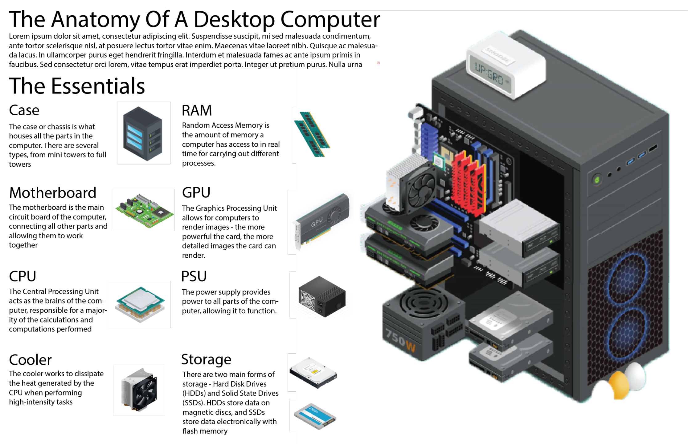

There are many parts of a computer. However the mane ones are: The motherboard, The CPU, The GPU (Sometimes) The storage (SSD or HHD) The power supply, The case, and the Ram.
The motherboard is the base of the system. It is what everything connects to and is liek teh home base.
The CPU is the most important part. It computes everything but the graphics on the system.
The GPU computes the graphics. However, the GPU is commonly inside the CPU, meaning teh CPU is also computing the graphics.
The storage is pretty self explanatory. It is where everything is stored.
The power supply distributes power to all of the components in teh system. It is connected to the wall. However, this is not teh battery. We are talking about non-laptop PCs
The case is where all of the components are in.
The ram is temporary storage. It stores stuff that your PC needs to remember for a short amount of time, but all gets deleted when your PC gets powered off. It is also deleted if your PC does not need it any more.
These are all of the main parts of a PC. Next time you see one, ask however owns it what parts they used. Ask them what CPU they used or Motherboard.
